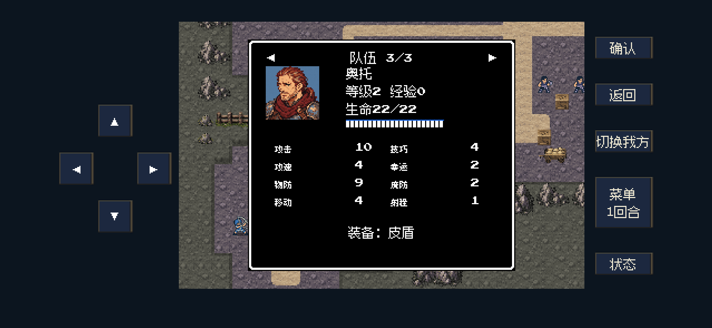
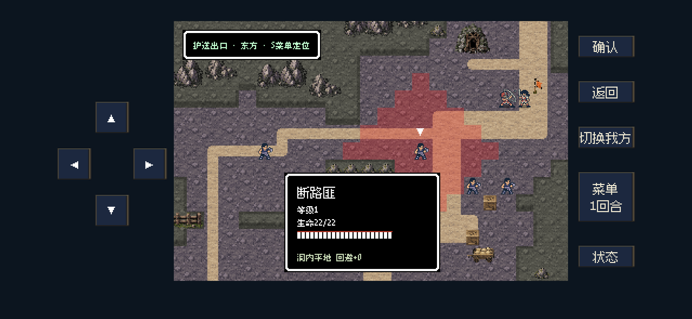
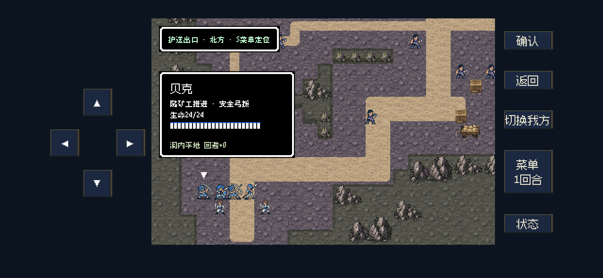

战斗反馈 · 双防、装备与矿道
S12指挥官力量9→11、物防4→6；装备状态与实际结算统一；贝克随矿工推进，盗匪采用正确的新版职业。
五项修改依据与测试范围（MD） · 40关强度及50个单位修改表（MD） · 六关操作结果 · 定向检查
数值调整与测试结果
共分析40关的同期历史队伍，调整第一章六关50名敌军。首战保留教学难度，第二至第五章保留当前强度。S11五名匪徒力量7→9；其中三名原本误用22号重装职业，已改成14号断路匪。
六张调整地图均通过正常操作：S11 11回合、S12 10回合、M12 8回合、M13 13回合、M14 4回合、M15 10回合。M15本次新增奥托、赫维濒死，难度变化已单列。33项定向检查、7项呈现检查通过。
仅以下三张不同场景画面。使用独立夹具与iPhone 16尺寸后台视口，未访问或更新iPhone；不是新增真机截图。
状态数值包括当前装备，分列物防与魔防
裸物防6＋皮盾3＝物防9；个人魔防2保持。攻击计入武器／适配法器，攻速扣除重量，幸运与移动计入相应戒指。进阶人物采用相同计算。

盗匪恢复正确职业与新版形象
S11_e1—e5统一为14号断路匪；地图与战斗小像均使用已验收的新图。保留原位置、数量、生命和物防，力量7→9，修正前三名遗留的重装抗性。

贝克随矿工推进，安全时提供弓援
修复旧witness标记导致的固定站位。贝克招募前自动行动，矿工移动后跟进，安全时射击；战后存活仍需玩家邀请。他不替代两组矿工的撤离目标。

物防／魔防结算原本已独立。本次补显示与标签，普通魔法仍为力量＋法术威力－目标魔防，限制1～60。详见原作来源、特殊规则和修改边界。